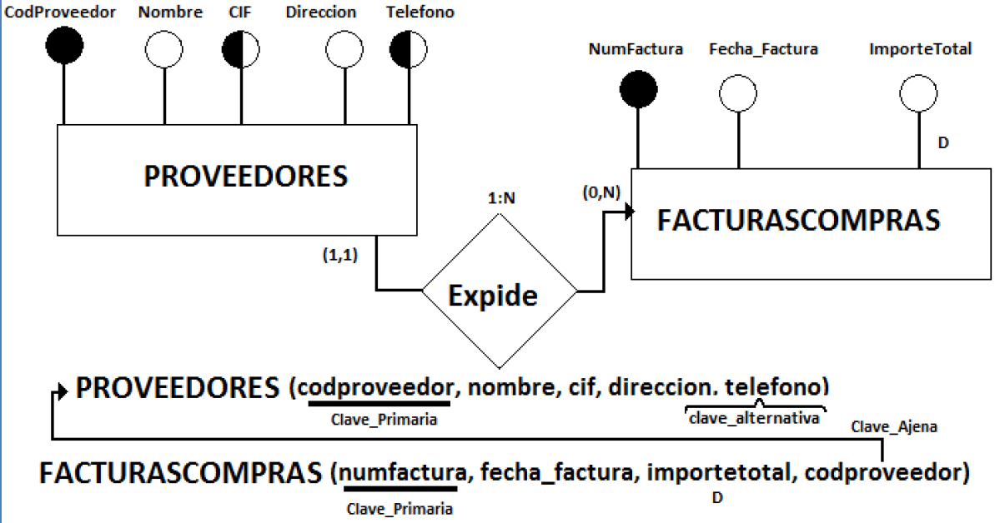
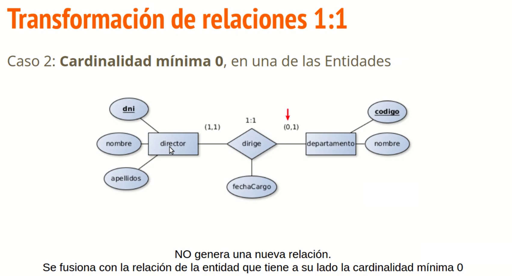
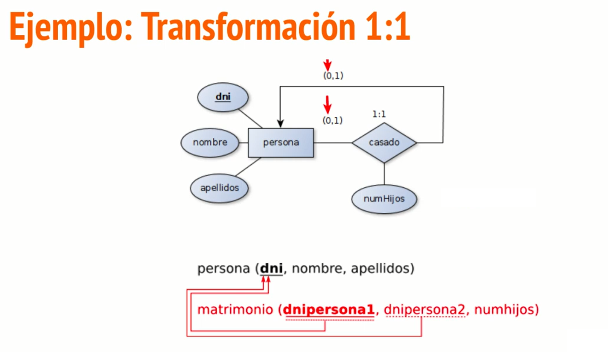

El diseño lógico de una base de datos relacional es un proceso más riguroso y estricto que el diseño conceptual. La realidad del universo del discurso ya ha sido modelada con el modelo de datos E/R, que es la parte del diseño que sin duda más posibilidades y enfoques distintos presenta a la hora de ser abordado.
De lo que se trata ahora es de convertir el esquema de base de datos que se obtiene en un diseño conceptual en un conjunto de tablas (correctamente denominadas relaciones) relacionadas entre sí.
Esta transformación se realiza siguiendo una serie de normas, sin que el proceso ofrezca tantas variantes como ocurría en el diseño conceptual. De manera que el diseñador tendrá que tomar menos decisiones creativas y su tarea ahora será más mecánica. Aun así se debe decidir qué hacer por ejemplo con las generalizaciones/especializaciones, lo cual sigue siendo una decisión basada en recomendaciones y en la experiencia, tal y como ocurría en el diseño conceptual. En general, el resto de las transformaciones son más mecánicas, ya que sólo se debe seguir escrupulosamente las reglas que establece el modelo de datos relacional.
Existen tres normas básicas a seguir a la hora de transformar el esquema conceptual E/RE en un esquema lógico relacional:
1. Toda entidad se convierte en una nueva relación.
2. Toda interrelación donde el tipo de correspondencia es 1:N se transforma realizando lo que se llama "propagación de clave", creándose una clave ajena en la relación de la cardinalidad N.
3. Toda interrelación donde el tipo de correspondencia es N:M se transforma en una nueva tabla intermedia, que tendrá dos claves ajenas que referencian a las relaciones que participaban en forma de entidades en la interrelación.
Observemos como se cumplen las dos primeras reglas en el siguiente ejemplo:

Por lo tanto, las reglas básicas de transformación del Modelo Relacional para obtener un esquema lógico a partir de un esquema conceptual vienen reflejadas en la siguiente figura:

Vamos a estudiar cada uno de los casos posibles mediante ejemplos :
En el caso de N:M se crea una nueva tabla, con las claves principales de las entidades relacionadas que a su vez serán claves foráneas o ajenas.
Veamos ahora el caso de las relaciones de tipo 1:N ->
Tendremos dos casos, en función de cuál sea la cardinalidad mínima de la entidad que interviene con cardinalidad 1.
Veamos un ejemplo de esta caso:

El segundo caso que podemos tener de esta tipo es cuando la cardinalidad mínima de la entidad que actúa con 1 es cero. En esta caso crearemos una nueva relación ->
En nuestro ejemplo quedaría de la siguiente manera:
Veamos ahora las transformaciones de relaciones de tipo 1:1 En este apartado nos podemos encontrar con 3 posibilidades:
- (1,1) (1,1)
- (1,1) (0,1)
- (0,1) (0,1)
El primer caso sería el (1,1) (1,1). Aquí debemos propagar la clave en un sentido o en otro, da igual el escogido.
En segundo lugar tendremos el caso (1,1) (0,1) donde debemos tener siempre en cuenta que no debemos propagar nulos de un lado al otro, por lo tanto siempre se propagará la clave del lado del (1,1)

Por último, tendríamos el caso (0,1) y (0,1). Aquí se genera una nueva relación (dos posiblidades):
Quedaría de la siguiente manera: (como vemos hay dos posibilidades al crear la nueva relación)
Veamos un ejemplo de cardinalidad (0,1) a (0,1) en una relación reflexiva:

Estudiemos ahora cómo sería la transformación en el caso de las entidades débiles: en este caso la entidad débil necesita la clave de la entidad fuerte que junto con su identificador será la clave primaria. Además la parte de la clave que pertenece a la entidad fuerte será clave ajena.
Por últimos nos queda estudiar las Generalizaciones/Especializaciones (también llamadas jerarquías). Existen 3 métodos para estos casos:
- Colapsar -> consiste en transformar la generalización/especialización en una única tabla con todos los atributos del supertipo y de los subtipos. Esta solución es recomendable si los subtipos no tienen apenas atributos propios y sobre todo si los subtipos no participan en interrelaciones, sino que sólo participa el supertipo. Los atributos de los subtipos deberían poder contener valores nulos.
- Estallar -> consiste en crear una tabla por cada subtipo y otra por el supertipo. Las tablas creadas de los subtipos contendrán una clave ajena que referencie a la tabla del supertipo. Es la opción más usada.
- Especializar -> consiste en hacer desaparecer al supertipo, de manera que los subtipos heredarían los atributos del supertipo. Esta solución suele ser recomendable siempre que el supertipo no participe en interrelaciones, aunque también podría utilizarse en ese caso.